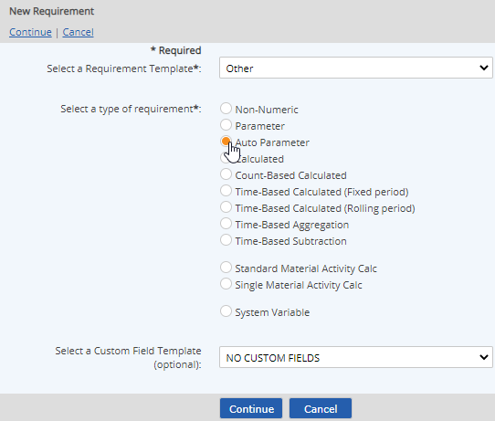
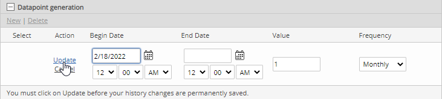

Auto Parameters are used to trigger a pre-determined value at a set interval, for the purposes of triggering a calculation, generating a task or an event, or other purpose.
Creating too many dependencies on a single auto parameter can affect system performance, so use of these should be strictly reviewed.
To create a Parameter requirement:
Select Auto Parameter for the type.

To apply user-defined custom fields select a Custom Field Template to apply. See Apply or Change Custom Field Template.
Select New. Define the following fields:
Begin Date: Date to begin generating auto parameter values. The date and time selected determines the date/time of all future data points generated.
Value to be generated (numeric value)
Frequency of generation: daily, weekly, monthly, quarterly, or yearly (see notes below).
Click Update to save the criteria.

Values may be historized if necessary. If the value you want to generate for the Auto Parameter changes in the future, you can add an End Date for the current value and define a new value to generate with a new Begin Date.
For all period types, the complete date of the generated data points is equal to the begin date of the period.
A monthly autoparameter with a begin date of 1/1/08 will trigger data points on 1/1/08, 2/1/08, 3/1/08, 4/1/08. etc.
When an interval starts on day 29-31 of a month, the following rules (regardless of the time of day) are applied:
The given interval start day is maintained within each subsequent month when the month has the appropriate day. Otherwise, the last day of the month is used.
A monthly autoparameter with a begin date of 1/30 will generate data points on on 1/30, 2/28 (or 2/29 for leap years), 3/30, 4/30, 5/30, 6/30, etc. (disregarding that March and May have 31 days).
A monthly autoparameter with a begin date of 1/31 will generate data points on the last day of each month — 1/31, 2/28 (or 2/29), 3/31, 4/30, 5/31, 6/30, etc.
This means if you want data points to be generated on the last day of each month, the begin date must be the last day of a 31-day month (January, March, May, July, August, October or December).
Too many dependencies on a single autoparameter may cause significant performance issues in the system. Best practice is to limit the number of dependencies on a single autoparameter and use different localized autoparameters where necessary.